1Waarom
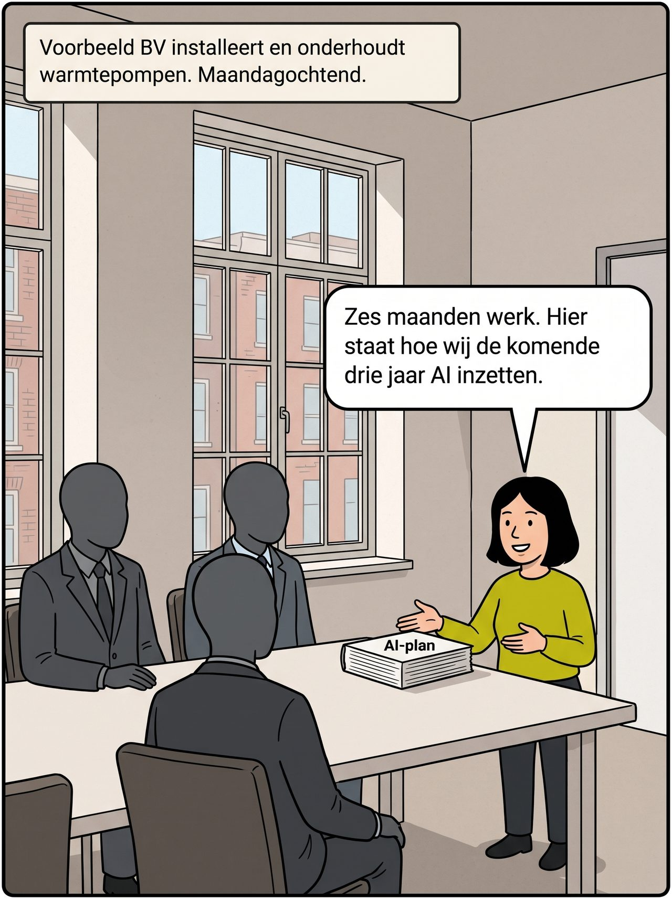
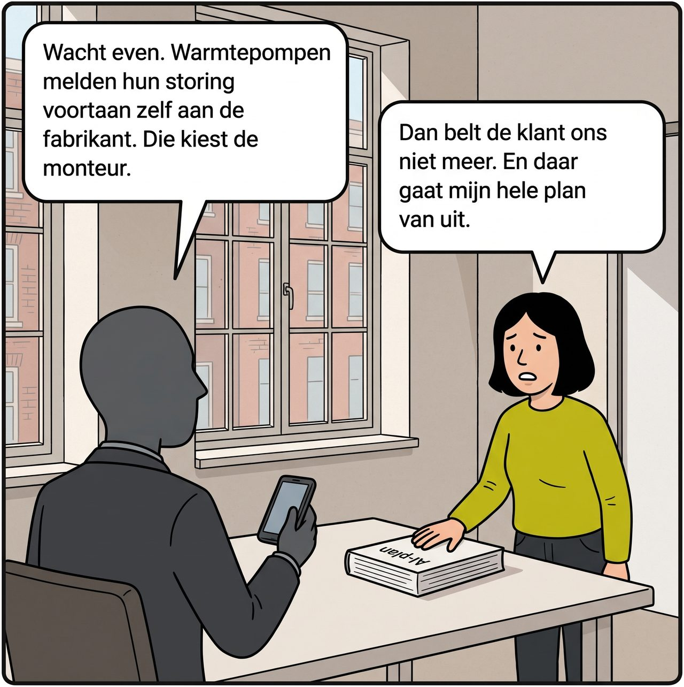
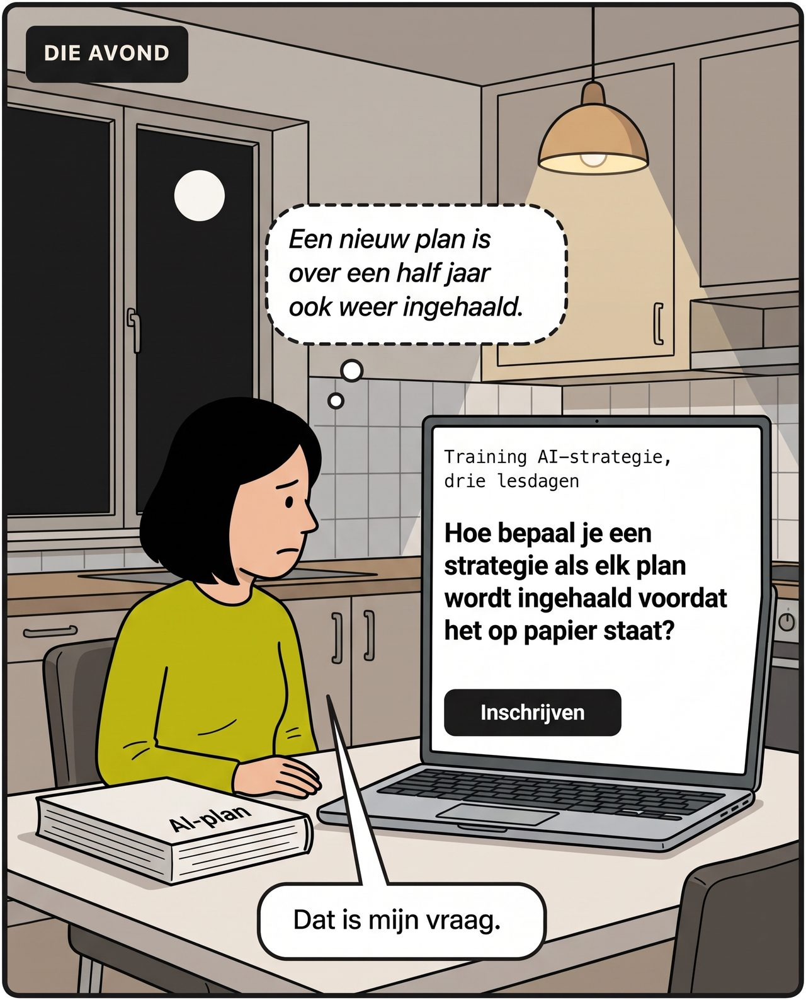
2Hoe
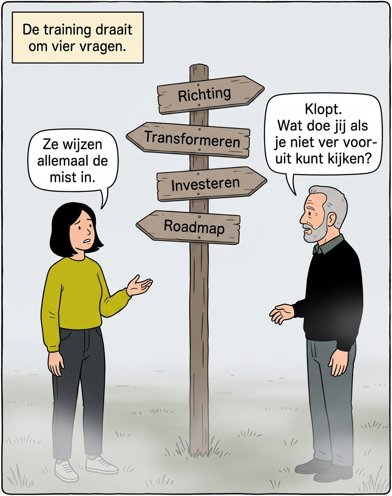
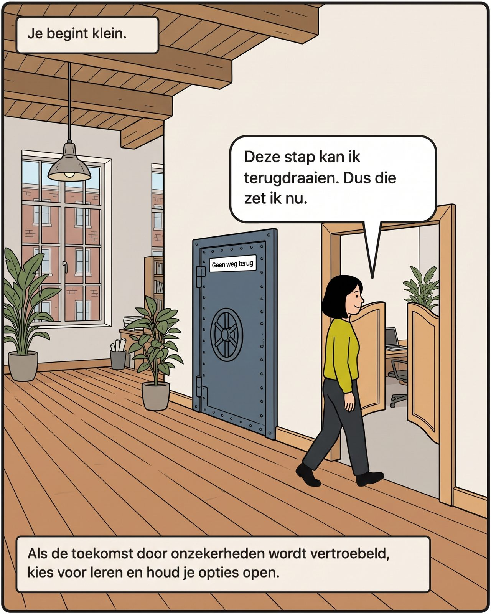
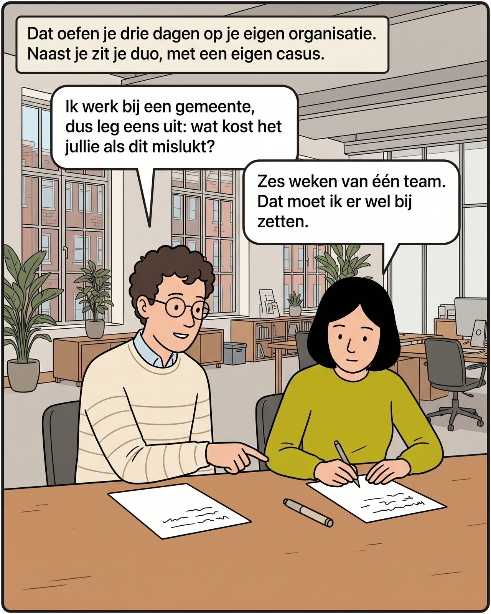
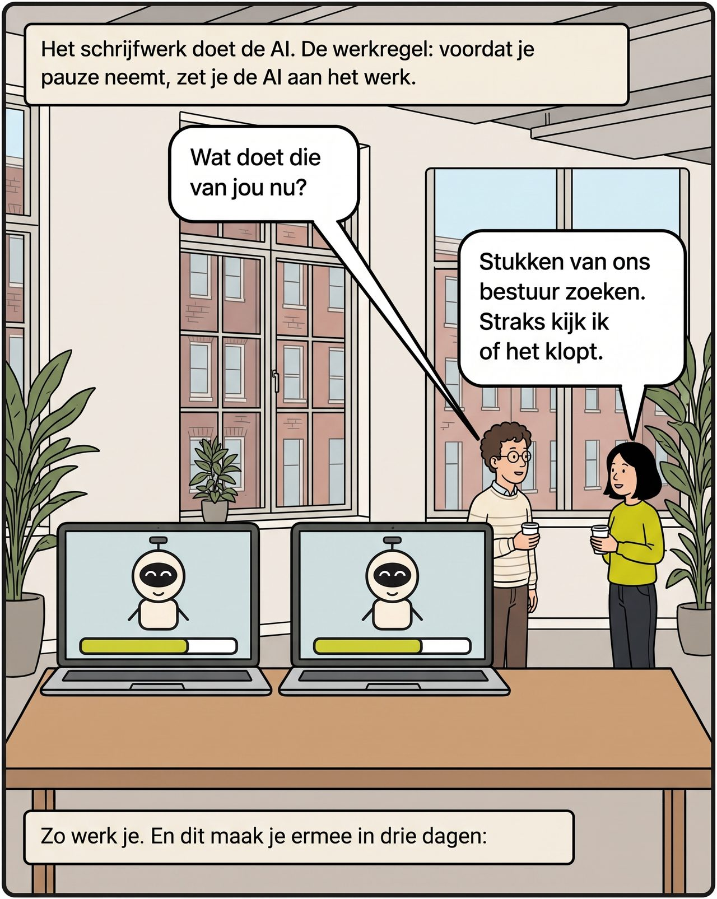
3Wat
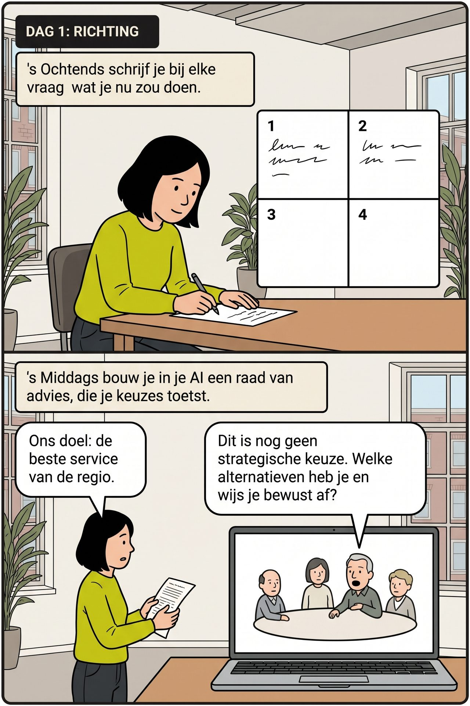
3 van 10: je vier vragen, de aanleiding en je doelen
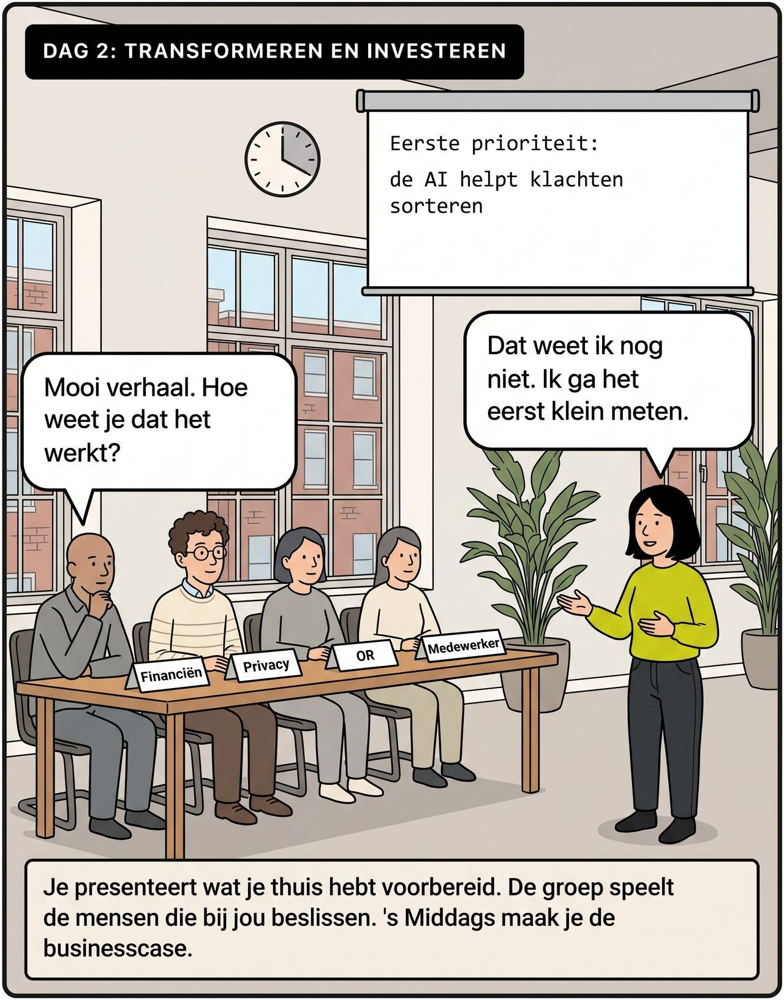
4 van 10: je eerste prioriteit komt erbij
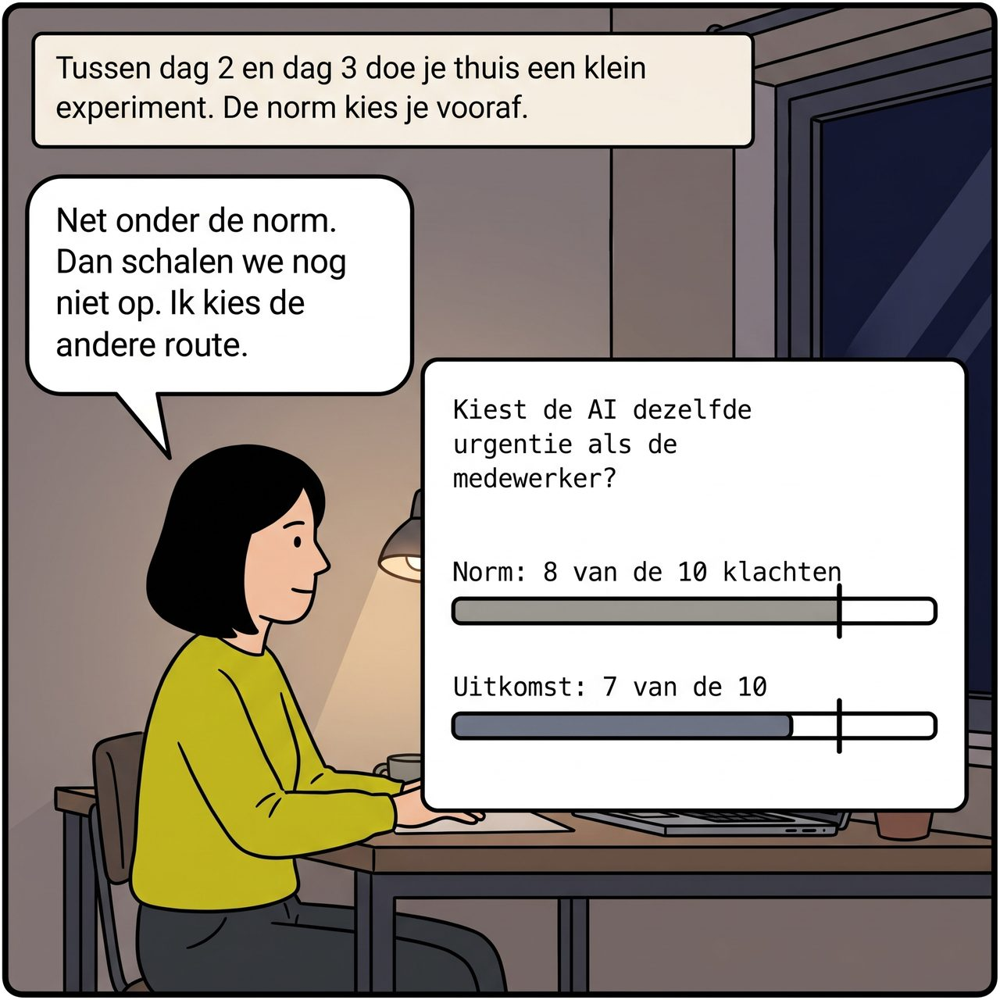
4 van 10: het bewijs staat erbij
![Boven: een route met drie stations, Experiment, Pilot en Opschaling; de eerste wissel staat om. Onder: Noor praat met het robotje, dat een bezorgde collega speelt. Dag 3: de route en het draagvlak. Tekst in het plaatje: Je maakt een route voor het eerste jaar. Bij elke stap staat wat je doet als het tegenvalt. Daarna oefen je het lastigste gesprek. De AI speelt je collega. Ik ben nu verantwoordelijk voor het afhandelingsproces van klachten. Wat blijft er van mijn werk over als AI dit gaat automatiseren? Jij blijft beslissen. De AI doet alleen een voorstel.](beeld/web/plaatje11.jpg)
10 van 10: je hele voorstel, in concept
4En dan
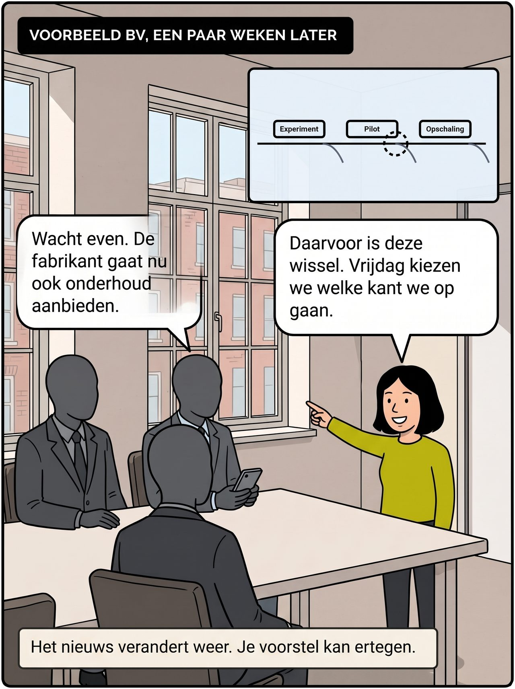